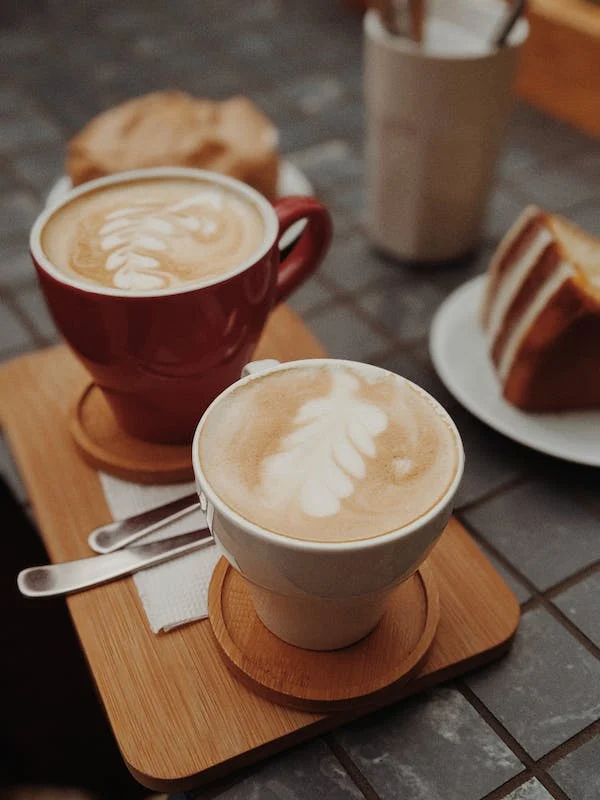

The smell of coffee
A cafe with the color of coffeeAt incredible prices
200Coffee is a common drink that is obtained from roasted and ground coffee beans. Coffee is slightly acidic and because of its high caffeine content, it is a stimulant. This drink is the most popular hot drink in the world. The coffee plant is native to Yemen and Africa, but much more than these areas, it is cultivated in the subtropical and tropical regions of the American continent and Southeast Asia. It is also relatively less cultivated in some areas of South Asia such as India. When the fruit of the coffee plant ripens, the coffee beans are harvested and processed. they do. Dried coffee beans are roasted to different degrees, depending on the desired aroma and taste, different degrees of baking are considered for this product.

At incredible prices
200Just be with us
200
Drink coffee with a smile
200It has a different taste!
100Prepared in Limerick
150White coffee is good for the stomach and digestive system
150Milk makes the taste of cappuccino milder
200